L'authentique Knafeh

Ici vous trouverez la recette (enfin!!!) de l’authentique Knafeh de Naplouse!!
Cette recette ça fait un bout de temps que j’attends de vous en parler (et un bout de temps que certains attendent que je la publie) mais j’ai choisi d’attendre la 24ème édition de la Battle Food pour le faire!
Pour petit rappel, la battle food est un défi culinaire entre blogueurs et non blogueurs autour d’un thème choisi, juste pour le plaisir de cuisiner, d’inventer et de partager de merveilleuses recettes! Pas de gagnants pas de perdants! Juste le plaisir de participer!
Vous l’aurez compris dans ma recette il y aura du fromage mais pas n’importe lequel!! Pour résumé, la knafeh (je vous en ai déjà parlé ici) est un dessert à base de fromage, de kadaïf et de sirop aromatisé à la fleur d’oranger ou eau de rose. Au mois de mars dernier je suis partie visiter Jérusalem et c’est là bas que j’ai découvert la knafeh et depuis ce jour je n’avais plus qu’une idée en tête: le reproduire en France!
J’ai donc questionné les gens du pays pour savoir exactement comment réaliser cette recette. Tout le monde m’a répondu que c’était impossible car je ne pourrai pas trouver le fromage qu’ils utilisaient! Mon chéri qui me suit généralement dans un peu toutes mes idées avait totalement baissé les bras aussi me disant de laisser tomber qu’on y arriverait jamais!! Mouais… C’est très mal me connaitre car quand j’ai une idée en tête je ferai tout pour la mener à terme!
Alors nous voila de retour en France et je commence illico à rechercher un peu partout comment trouver les ingrédients de la knafeh et surtout le fromage car c’est surtout ça le vrai problème ! J’ai trouvé des tas de recettes sur le net qui utilisent de la mozzarella, ricotta etc.. mais ça ne correspondait pas à la VRAIE, l’authentique, recette de là bas!
Après pas mal de recherches j’ai enfin trouvé LE fromage qu’il me fallait (et vous en trouverez aussi vous en trouverez dans les épiceries spécialisées).
Il s’agit du fromage akawi (akkawi ou encore fromage de St Jean d’Acre). Pour ceux qui ne connaissent pas il s’agit d’un fromage principalement fabriqué à partir de lait de vache. Il est présenté sous la forme d’un gros bloc blanchâtre conserver en saumure et produit dans beaucoup de Pays du Moyen-Orient. Son goût est très salé, neutre et est souvent mangé froid, grillé ou totalement dessalé pour être ensuite utilisé dans de nombreuses pâtisseries. La knafeh est une des pâtisseries qui utilise ce fromage et qui nécessite donc que le fromage akkawi soit dessalé.
PS: Si vous ne trouvez pas de fromage akawi, vous pouvez le remplacer par de la mozzarella c’est ce qui s’en rapproche le plus!
C’est une pâtisserie qui est également composée de kadaïf (qui ressemble à des cheveux d’ange) de beurre clarifié, de sirop et qui est ensuite parsemée de noix ou de pistaches. La knafeh nous vient tout droit de Naplouse (à 63km à Nord de Jérusalem) où de grandes familles sont très réputées là bas grâce à cette pâtisserie.
Vous imaginez bien que cette recette a dû subir l’épreuve de la validation par des connaisseurs et ce fut un grand ouui ouii ouiii il s’agit bien de la « vraie » knafeh (ouf^^)!!! Nous avons donc aujourd’hui la possibilité de manger de la Knafeh sans avoir besoin d’aller jusqu’à Jérusalem (même si le décor et l’ambiance qui y règnent le rendent forcement meilleur là bas! Mais c’est promis un jour on y retournera!)
Bon assez bavardé! Place à la recette!! 🙂
Vous avez vu!! On me voit dans le reflet de la cuillère!!! 😀
Ingrédients
- Kadaïf - 250g
- Fromage Akawi (ou mozzarella) - 450g
- Beurre clarifié - 125g
- Pistaches concassées - 1 bonne poignée
- Colorant orange - 1 pointe
- Eau - 100ml
- Sucre en poudre - 200g
- Eau de rose - 3 càc (selon vos goûts)
Instructions
- Découper l'akawi en lamelles ni trop fines ni trop grosses
- Plonger les dans un grand volume d'eau
- Changer l'eau très régulièrement
- Il ne doit plus avoir de sel pour préparer le knafeh
- Préchauffer le four à 180°
- Dans un casserole, à feu doux, faire fondre le beurre clarifié (recette du beurre clarifié) avec le colorant (j'ai un peu abusé pour le colorant cette fois ci^^)
- Pendant ce temps mettre le kadaïf dans votre mixeur pour réduire de taille les "vermicelles"
- Transvaser votre kadaïf dans un saladier
- Verser le beurre clarifié fondu et remuer de manière à ce que la totalité du kadaïf soit beurré (on y va franchement avec les mains^^)
- Tapisser le fond de votre moule avec un peu plus de la moitié du mélange kadaïf-beurre
- Bien aplatir avec vos mains dans le fond du moule
- Après avoir sécher votre fromage sur du papier absorbant
- Le râper et le sécher à nouveau sur du papier absorbant
- Recouvrir le kadaïf de fromage en aplatissant légèrement
- Recouvrir du reste de kadaïf
- Enfourner à 180° pendant 20-25min le temps que la kadaïf dore légèrement
- Faire chauffer à feu doux le sucre et l'eau et laisser sur le feu jusqu'à ce que le sucre soit totalement dissous
- Ajouter l'eau de rose ou eau de fleur d'oranger
- Retirer et laisser refroidir.
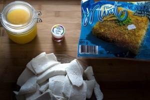
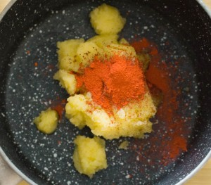
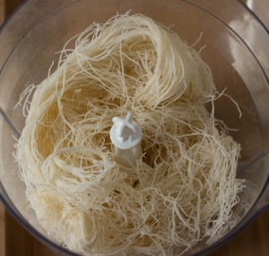
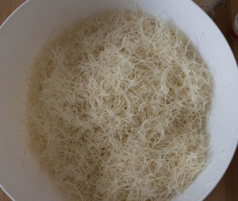
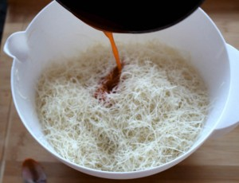
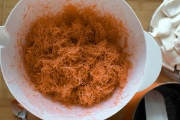
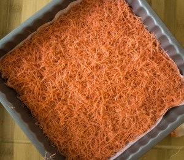
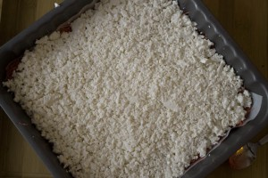
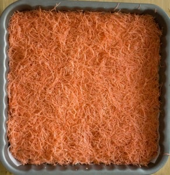
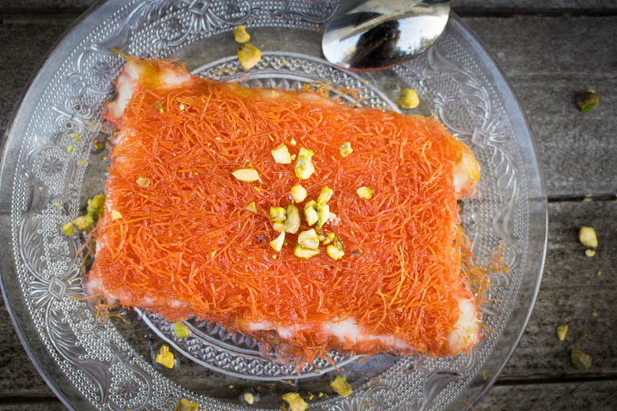
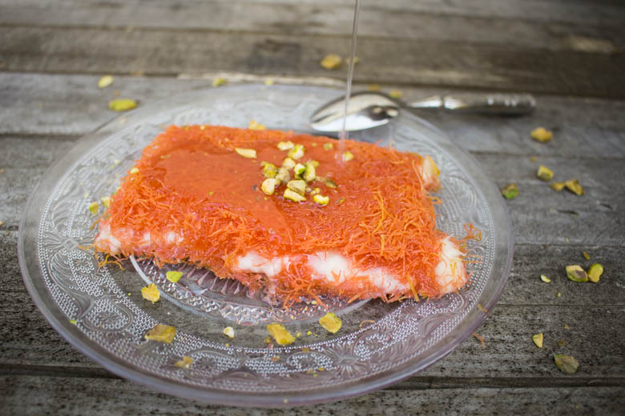
Les tips de la communauté
Recette très appréciée pour sa découverte culinaire originale. L'auteure confirme que c'est une spécialité palestinienne authentic et validée par son beau-père. Les lecteurs apprécient particulièrement le pas à pas en images et la possibilité d'utiliser de la mozzarella comme alternative.
Astuces
- Conserver le kadaif au congélateur pour une meilleure conservation
- Utiliser de la mozzarella de qualité si le fromage akawi n'est pas disponible
- Chercher le fromage akawi dans les épiceries arméniennes ou turques, marque « baktat »
- Variante possible avec de la semoule cuite en amont avec du lait
Variantes suggérées
- Version avec semoule à la place du kadaif (à préparer en amont)
- Adaptation avec mozzarella seule au lieu du fromage akawi
- Possibilité d'utiliser différents fromages blancs dessalés (brebis, vache, chèvre)
Ajustements signalés
- Mélanger mozzarella et fromage de brebis ensemble rend le résultat moins savoureux - préférer une seule sorte
- La teinte orange nécessite un colorant liposoluble spécifique, trouvable en boutique culinaire